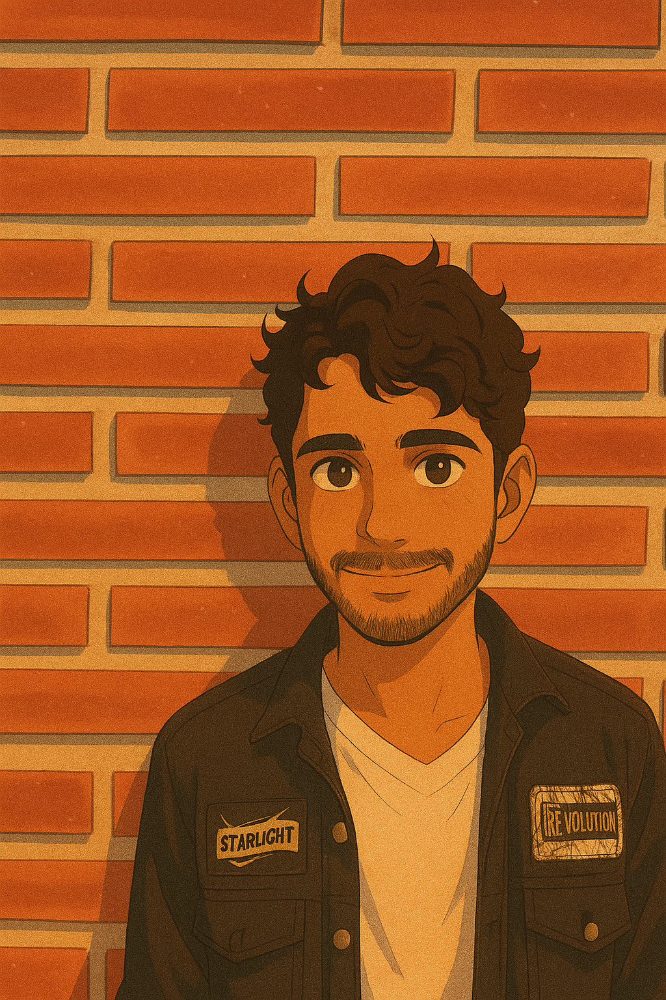

Vishwajeet’s Story: From Lost to Leader
When I was just 4 years old, I got lost.
Scared and alone, I had no idea where my parents were or how to find them. A kind police officer found me and brought me to Ummeed Aman Ghar, an NGO under the Rainbow Foundation. That moment changed my life forever.
In this new world, I found care, safety, and a new family. I made many friends, and one caretaker became my lifeline — I called her "Mom." She fed me warm parathas and chicken, and gave me the love I thought I had lost forever.
For 14 years, the NGO was my home — a place of growth, learning, and memories. But when I turned 18, I had to leave. It was one of the hardest moments in my life. Leaving the only home I had ever known felt like losing my family all over again.
A New Beginning: Education & Purpose
With the continued support of Rainbow Foundation and its Aftercare Program, I didn’t give up. I completed my 12th class and then earned a Diploma in Software Development from South Ex, New Delhi. I also worked part-time at Vidhya Sagar Institute, teaching Math, Computers, and basic education to small children.
After my diploma, I had a dream — to pursue a regular BCA degree. When I asked my organization, they suggested I go for online learning. But I wanted more — real classes, real experience.
That’s when I learned about the WeLive Foundation, which supports higher education and living for care-leavers. I reached out, shared my story, and they believed in me. That belief gave me the wings to fly.
I booked a train ticket to Bengaluru for me and my friend Ajay — and we began a new chapter of life.
My Career Journey in Bengaluru
In Bengaluru, I joined the Unnati Program through WeLive, completed a 1-month training, and cleared my first-ever job interview at TeamLease Services.
There, I worked as a Relationship Executive, handling SBI credit card backend sales — guiding customers, collecting documents, and processing applications. I made amazing friends and learned the value of professionalism and hard work.
Later, as I got admitted to BCA, I shifted to part-time opportunities:
Social Media Designer Intern at WeLive Foundation – I learned WordPress, Canva, Gmail reports, PPT planning, and content design.
Fundraiser at Rootbridge Academy Pvt. Ltd. – I engaged donors, built relationships, and supported fundraising events.
Reconciliation & Data Management Trainee at Rootbridge – I now manage backend operations, perform data audits, and support financial reporting in a hybrid role.
All while studying in 3rd year of BCA, living independently, and building my future step by step.
My Mission: Empowering Care-leavers Like Me
I know how it feels to grow up without parents — to be 18 and not know where to go next. That’s why I’m building a Mentorship Platform for Care-leavers — a digital space where youth leaving CCIs can connect with mentors, career resources, and real guidance.
My goal is to make sure no one feels alone like I once did.
Every child deserves a second chance — just like I got.